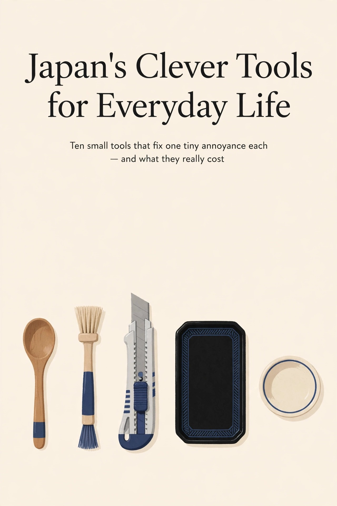

Japan's Clever Tools for Everyday Life
Ten small tools that fix one tiny annoyance each — and what they really cost.

Japan sells a tool for almost every small annoyance: a spoon shaped to reach the corner of a yogurt cup, a brush made only for the gap in a window rail, a cutter made only for cardboard boxes.
This guide introduces ten of them — and, for each one, works out the honest total cost, shipping included, so you can judge for yourself.
A ¥448 ice maker becomes ¥938 once shipping is added.
A ¥594 spoon costs ¥864 by the time it reaches you.
A ¥480 brush set ships free — and says so.
That gap between the price on the tag and the price you actually pay is where this book lives. No hype, no "must-buy" lists: just ten good tools, what each one is for, and the maths, in yen, exactly as found.
What's inside
- Introduction — why Japan makes tools like these
- Chapter 2 — Kitchen finds
- Chapter 3 — Desk & smartphone finds
- Chapter 4 — Shoes, entryway & daily-life hacks
- Chapter 5 — How prices work in Japan
- Chapter 6 — How to buy from overseas (direct, forwarding, or on a trip)
- Chapter 7 — Glossary
Prices in the book were checked 8–12 November 2026 and re-checked on 28 November 2026, unchanged. Prices in Japan change; the method for checking them doesn't.